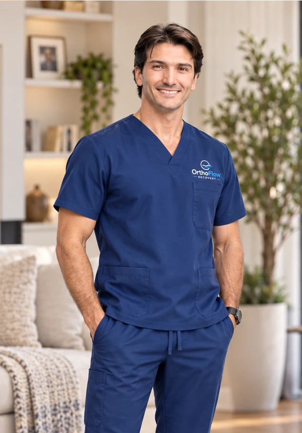

Mejorar los resultados de los pacientes llevando apoyo integral, soluciones modernas de manejo del dolor y un estándar de servicio superior al hogar.
Mejorar el estándar de atención ortopédica brindando a los pacientes acceso a terapias modernas, servicio confiable y orientación personalizada durante la recuperación en casa.
Sobre Ortho Flow Recovery
OrthoFlow fue fundada al ver lo difícil que pueden ser los primeros días y semanas después de una cirugía ortopédica, tanto para los pacientes como para los médicos que los atienden.
Los pacientes con frecuencia salen de la cirugía enfrentando dolor, hinchazón, movilidad limitada e incertidumbre sobre lo que viene. El hielo tradicional puede ser inconveniente e inconsistente, mientras que adquirir equipo avanzado de recuperación puede resultar poco práctico. Incluso cuando existe mejor tecnología disponible, coordinar el equipo, aprender a usarlo y gestionar su devolución puede convertirse en otra carga durante un momento ya exigente.
También vimos el desafío desde la perspectiva del consultorio. Los cirujanos y su personal quieren que los pacientes se sientan apoyados después de salir, pero no siempre cuentan con el tiempo o los recursos para coordinar entregas de equipo, responder cada pregunta sobre el producto o gestionar la logística de alquiler.
OrthoFlow fue creada para ayudar a cerrar esa brecha.
Entregamos equipo avanzado de frío y compresión directamente al hogar del paciente, lo instalamos, explicamos cómo funciona y permanecemos disponibles durante todo el alquiler. Cuando el paciente termina, coordinamos la recogida también. Nuestro objetivo es que toda la experiencia sea sencilla para el paciente y requiera la menor intervención posible del consultorio de referencia.

Lo que hacemos diferente
Terapia avanzada de frío y compresión.
Ortho Flow ofrece terapia de frío y compresión que ha sido asociada con reducciones significativas en el uso de opioides posoperatorios en estudios ortopédicos. El sistema NICE1 brinda a los pacientes acceso a tecnología moderna de recuperación sin depender de métodos tradicionales con hielo.
Servicio personalizado de principio a fin.
Desde la entrega e instalación en casa hasta la asistencia continua durante todo el alquiler, Ortho Flow brinda un servicio receptivo y personalizado en cada etapa.
Recuperación más fácil en casa.
Nos ocupamos de la logística del equipo para que usted no tenga que hacerlo. Sin recoger nada antes de la cirugía, sin buscar hielo, sin envíos de devolución. Solo entrega, soporte durante su alquiler y recogida cuando termine.
En qué creemos
Ser confiables.
Cumplimos lo que decimos y hacemos cada entrega, instalación y recogida lo más puntual posible.
Ser receptivos.
Los pacientes y los consultorios deben poder comunicarse con una persona real cuando necesitan apoyo.
Hacerlo simple.
Nos tomamos el tiempo para explicar el equipo con claridad y asegurarnos de que cada paciente se sienta seguro al usarlo en casa.
Mantenernos involucrados.
Nuestro servicio no termina en la entrega. Permanecemos conectados durante el proceso de recuperación y estamos disponibles cuando surgen preguntas.
Hable con nosotros antes de su procedimiento
Reserve con anticipación y nos adaptaremos a su horario.
Reservar Equipo